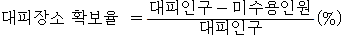
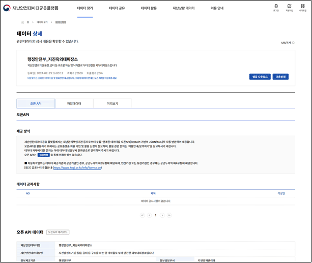
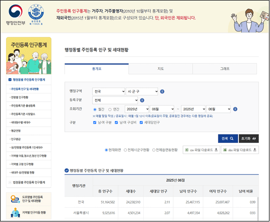
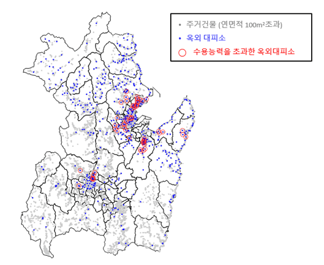

지진 옥외대피장소는 지진화산재해대책법 제 10조 3에 근거하여 설치하며 지진 발생시 건물 붕괴, 낙하물, 화재 등 2차 피해로부터 시민이 안전을 확보하기 위해 일시적인 대피장소로 사용할 수 있도록 지정된 옥외공간으로 주로 공원, 학교 운동장, 광장 등의 넓고 개방된 장소를 선택하여 지정되어 있다. 지진화산재해대책법 시행령 제 9조 4에 의해 “지진옥외대피장소의 지정 및 관리 등에 관한 지침”이 수립되어 있으며 여기에 규정된 옥외대피장소의 지정 요건 및 절차를 정리하면 다음과 같다.
■ 지진 옥외대피장소의 정의 및 역할
(정의) 지진 발생 시 시설물 붕괴 및 낙하물 등의 위험으로부터 일시적으로 대피하여 신체를 보호할 수 있는 안전한 야외 장소 (거주지 인근 운동장공원 및 안전한 공터 등)
(역할) 지진 발생 시 일시적으로 대피하여 몸을 보호하고 대피에 대한 정보지자체 지원 사항 등등을 제공받을 수 있는 장소
■ 기본 원칙
(규모 적정성) 거주인구 및 유동인구 현황, 주변 지진 옥외대피장소 수용규모, 재해약자 등을 고려하여야 함
(시설 접근성) 야외 공터운동장 등거주지 인근 안전한 장소로서 모든 방향에서 접근이 용이하여야 함
■ 지정 요건
(고층건물 이격거리) 주변에 고층건물이 있는 경우 건축물 외장재 간판 등의 탈락을 고려하여 충분한 이격 거리 확보
(대피가능인원) 대피면적 내 수용이 가능한 인원으로 인당 소요면적은 0.825을 적용
위치, 대피면적, 대피가능인원 등 지진옥외대피장소에 관한 정보는 NDMS(공공시설물 내진보강관리시스템)에서 관리하도록 규정하고 있는데, 그 밖에 공공데이터포털(https://www.data.go.kr/), 재난안전데이터 공유플랫폼(https://www.safetydata.go.kr) 등에서도 정보가 공개되어 있다. 2025년 7월 현재 전국에 11,342개의 지진옥외 대피장소가 지정되어 있다.
지진 옥외대피장소가 그 목적에 맞게 시민의 생명 보호에 효과적으로 활용되기 위해서는 단순히 대피장소를 지정하는 것만으로는 충분하지 않으며, 대피소까지의 거리, 이동 경로의 안전성, 교통·장애물 등 물리적 환경 조건을 분석해 실제로 도달 가능한지를 검토하는 접근성 분석이 필요하다. 대피장소 접근성 분석시 거리·시간 기준으로는 보통 500m, 1000m, 1500m의 3가지 기준이 많이 사용되며, 성인의 평균 보행속도 (4km/hr)를 적용하면 각각 7.5분, 15분, 22.5분에 해당한다. (국립재난안전연구원, 2014; 이소희 외, 2015)
본 연구에서는 지진대피장소의 접근성 분석에 대한 기초자료로서 야간 및 주간의 거주지에서부터 약 20분 (1500m) 이내에 대피가능여부를 기준으로 대피장소 확보율을 정의하고 산정절차를 제시하였다. 대피장소 확보율은 인구밀집지역내 대피시설의 위치 및 수용능력의 적정성 판단에 활용될 수 있다.
대피장소 확보율의 정의는 다음과 같다.
식 (1-1)

다음은 검토시 적용한 판단기준 및 주요 가정사항이다.
판단기준 : 기준시간 (약 20분 = 1.5km) 이내에 거주지에서부터 지진옥외대피장소까지 대피 가능 여부
대피거리, 즉 거주지에서부터 옥외대피장소까지의 거리는 위경도좌표로부터 산정하되, 사각형 격자형식의 시가지 형태를 고려하여 직선거리가 아닌 맨하탄 거리를 적용한다.
대피자의 수는 행정안전부의 인구통계자료 및 용도별 건물의 단위면적당 인구분포를 고려하여 추정한다.
미수용인원은 ① 기준 거리내에 옥외대피장소가 존재하지 않아 대피가 불가능한 인원의 수와 ② 특정 옥외대피장소에서 대피자 수가 수용인원을 초과할 경우 초과인원의 수를 합산하여 산정하였다.
농어촌지역과 저밀도 거주지의 경우 옥외대피장소로 지정된 곳이 없더라도 주변의 공터 혹은 농지로 대피가 가능하므로 대피장소 확보율 평가에서 제외한다. 인구밀도의 기준은 5명/ha로 설정하였다. 인구밀도는 행정동별 인구를 유효토지면적으로 나눈 값으로 산정한다.
평가절차
옥외대피장소 목록
옥외대피장소의 목록은 재난안전데이터 공유플랫폼(https://www.safetydata.go.kr) 등에 공개되어 있는 정보를 활용하여 작성할 수 있다. 이 플랫폼은 공공데이터 포털 (https://www.data.go.kr/)로부터도 접근가능하다. 이 자료는 오픈 API형태로 제공되며 각 시설별 지역코드, 시설일련번호, 시도명, 시군구명, 시설명, 도로명주소코드, 법정동코드, 행정동코드, 상세주소, 시설면적, 경도, 위도 등에 대한 정보를 포함하고 있다. 재난안전데이터 공유플랫폼 검색결과 2025년 7월 현재 전국에 11,342개의 지진옥외대피장소가 지정되어 있다. 옥외대피장소의 수용능력은 민방위 대피시설의 1인당 면적기준에 따라 1인당 0.825를 점유하는 것으로 가정하고 있다.

[그림 2-1] 재난안전데이터공유플랫폼
야간인구 및 주간인구의 산정
인구분포는 시간대에 따라 즉, 주간과 야간의 인구분포가 다르다. 야간인구는 통상 주민등록상 주소지 또는 실제 거주지에 머무는 인구를 의미하며, 주간인구는 출근, 통학, 경제활동을 위해 이동하여 해당지역에 활동 중인 인구를 의미한다. 주간인구는 해당지역의 특성 (즉, 도심 업무지구, 주거지역, 공단지역 등)에 따라 크게 달라지며 보통 수도권 교통조사 혹은 통신사의 모바일 기반 유동인구 분석 등을 통해 추정하며 전국단위의 주간인구 분포에 대한 자료는 제공되지 않는다. 또한 주간에는 건물내에 머물르는 재실인구 뿐 아니라 교통시설 등을 통해 이동 중인 이동인구도 생각해볼수 있다. 하지만 본 연구에서는 보수적인 평가를 위해 이동인구는 무시하고 모든 인구가 건물내에 머무르는 것으로 가정하였다.
시간대에 따라 인구의 분포가 달라지므로 피장소 확보율 평가는 야간인구와 주간인구 각각을 적용한 평가 모두 필요하다. 본 연구에서는 이동인구는 무시하고 행정안전부의 인구통계자료 및 용도별 건물의 단위면적당 인구분포를 고려하여 야간 및 주간의 대피자 수를 추정하였다.
행정동별 야간인구는 공공데이터포털 혹은 행정안전부 (https://jumin.mois.go.kr/)에서 제공되는 행정동별 주민등록인구통계자료를 활용하였다.

[그림 2-2] 행정동별 주민등록 인구
용도별 건물의 단위면적당 인구분포는 HAZUS의 자료(Hazus Inventory Technical Manual – Hazus 6.1, 2024, FEMA)를 참고하여 결정하였다. 해당자료에는 건물의 용도별로 주간대(오후 2시경)와 야간대(오전 2시경) 1인당 점유면적에 대한 정보를 제공하고 있는데 [표 2-1]은 그 중 주거, 숙박, 학교, 업무시설, 상업시설, 공장 등의 6종의 용도를 선택하여 나타낸 표이다.
[표 2-2]는 [표 2-1]의 1인당 점유면적의 수치의 역수를 취하여 단위면적당 인구로 환산한 다음 주거건물의 야간을 기준으로 상대적인 단위면적당 인구비율로 변환한 값을 나타낸다. 또한 건축물의 용도는 부동산원의 용도코드를 기준으로 분류하였다. 표의 마지막 열은 6종류의 건물용도와 대응되는 부동산원의 용도코드를 나타낸다.
[표 2-2] 용도별 건물의 단위연면적당 인구의 상대비율
용도
주간인구
야간인구
부동산원 용도코드
주거
0.7
1
1~8, 24, 26, 28
숙박
0.14
0.8
9, 21~23
학교
4.55
0.1
39, 45
업무
1.3
0.03
11~13, 25, 27, 31~34
상업
1.93
0.04
10, 29, 30, 35~38
공장
0.6
0.06
14~20, 40~44, 46
건물별 인구분포는 해당 행정동의 용도별 건물의 연면적 합계와 용도별 연면적당 인구비율([표 2-2])로부터 용도별 건물의 단위연면적당 인구를 먼저 구하고 이를 개별 건물의 연면적에 곱하여 산정한다. [표 2-3]은 야간인구의 수는 6,827명인 특정 행정동을 예시로 건물별 야간인구의 계산과정을 나타낸 것이다. 우선 해당 행정동의 건축물 목록으로부터 용도별 건물연면적의 합계를 ①과 같이 구한다. 다음 야간인구의 용도별 단위면적당 인구비율은 [표 2-2]에서 ②와 같이 제시되어 있다. ③은 ①과 ②를 곱하여 구한 환산연면적이며 이들 값의 합계는 280,647이다. 이어 ④와 같이 환산연면적의 상대비율을 구하고 ⑤에서 전체인구를 이 비율에 따라 분배한다. 건물별 단위연면적당 인구는 ⑥과 같이 이 값을 용도별 연면적 합계로 나눈 값이으로 건물별 인구는 용도에 따라 구해진 단위연면적당인구에 해당건물의 연면적을 곱하여 구한다.
[표 2-3] 야간인구의 계산과정
①
②
③=①×②
④=③/(③의 합계)
⑤=④×(전체인구)
⑥=⑤/①
용도
연면적 합계(㎡)
단위연면적당 인구비
환산연면적
환산연면적비
용도별 건물의 야간인구
단위면적당인구 (인/㎡)
주거
250,229
1
250,229
89.20%
6,087
0.02433
숙박
20,460
0.8
16,368
5.80%
398
0.01946
학교
31,237
0.1
3,124
1.10%
76
0.00243
업무
2,445
0.03
73
0.00%
2
0.00073
상업
105,396
0.04
4,216
1.50%
103
0.00097
공장
110,619
0.06
6,637
2.40%
161
0.00146
합계
280,647
6,827
주간인구는 출근, 통학, 경제활동을 위해 이동하여 해당지역에 활동 중인 인구를 의미하므로 그 합계는 야간인구의 합계와 다른 값을 가진다. 주간인구의 합계는 야간인구에 국가통계포털 (https://kosis.kr)에서 제공하는 주간인구지수를 곱하여 구한 값으로 가정하였다. 이중 주거용 건물의 주간인구는 [표 2-2]에 나타낸 바와 같이 주간인구는 야간인구의 70%로 볼 수 있다. 따라서 주간인구의 분포는 먼저 주거용 건물에 야간인구의 70%에 해당하는 재실자가 존재하는 것으로 보고 나머지 인구, 즉 전체주간인구에서 주거용건물 야간인구의 70%를 뺀 인구수를 주거건물을 제외한 나머지 건물의 상대적인 용도별 인구비율에 따라 분배하여 구하였다. 이때 주간인구지수는 행정동이 아닌 시군구 별로 제공되므로 주간인구의 분배는 시군구별 건물의 환산연면적비를 기준으로 수행하였다. 이는 주간인구가 해당 행정구외부로부터의 인구유입 혹은 유출을 의미하며 경제활동이나 통학이 행정동내에서만 이루어지지 않는 점을 고려하면 적절한 가정으로 판단된다.
[표 2-4]는 주간인구의 계산과정을 예시로 나타낸 표이다. 해당 시군구의 야간인구는 492,416명, 주간인구지수는 0.9912로 주간인구는 488,083명이다. 해당시의 주거용건물의 야간재실자의 합계는 461,761명이며, 이중 70%인 323,233명이 주간에도 주거용 건물에 머무르며 나머지 164,850명이 주거용 건물이 아닌 건물에서 활동하는 것으로 가정한다. [표 2.2-4]는 활동인구의 분포를 산정한 것으로 야간인구의 경우와 유사하게 용도별 단위면적당 인구를 구하고 이 값에 개별 건물의 연면적을 곱하여 건물당 재실자수를 산정한다.
[표 2-4] 주간인구의 계산과정
①
②
③=①×②
④=③/(③의 합계)
⑤=④×(전체인구)
⑥=⑤/①
용도
연면적 합계(㎡)
단위연면적당 인구비
환산연면적
환산연면적비
용도별 건물의 wn간인구
단위면적당인구 (인/㎡)
주거건물을
숙박
453,801
0.14
63,532
0.20%
396
0.00087
학교
2,214,626
4.55
10,076,546
38.10%
62,814
0.02836
업무
667,182
1.3
867,336
3.30%
5,407
0.0081
상업
5,941,540
1.93
11,467,172
43.40%
71,483
0.01203
공장
13,234,680
0.3
3,970,404
15.00%
24,750
0.00187
합계
280,647
164,850
대피거리의 계산
대피시간을 고려하기 위해서는 재실자가 있는 각 건물(출발지)에서부터 옥외대피장소까지의 거리를 산정하여야 한다. 이 상대거리는 위도, 경도 좌표를 활용하여 산정하였다. 즉, 모든 옥외대피장소와 고려대상 건물의 위도, 경도 좌표를 x, y 좌표로 변환한 후 각 주거건물 1.5km 이내에 옥외대피장소가 존재하는지 판단하였다. 만약, 대피장소가 존재하지 않을 경우 대피인원을 미수용인원A로 산정하고, 복수개가 존재할 경우 대피인원을 거리에 반비례하도록 분배하여 거리가 가까운 대피장소에 많은 인원이 대피하는 것으로 가정하였다. 이때, 대피인구가 옥외대피장소의 수용인원을 초과할 경우 초과인원은 미수용인원B로 산정하였다. 전체 미수용인원은 A와 B의 합으로 하여 행정동 별로 집게하고 대피장소확보율을 계산하였다.
주거건물과 옥외대피소간의 상대거리 산정시 두 지점의 직선거리보다는 두 점의 각 축방향으로의 거리의 합인 맨하탄 거리(Manhattan Distance)를 사용하였다. 이는 마치 복잡한 교차로를 무수히 많이 지나 한 지점에서 다른 지점에 도달하는 택시의 이동 경로와 유사한 면이 있으므로 시가지 내의 실제 이동거리와 유사하다.
지진 옥외대피장소는 건물 및 인구가 밀집된 지역에서 인명피해의 방지를 위해 중요하며 반대로 농어촌과 저밀도 거주지의 경우 옥외대피장소로 지정된 곳이 없더라도 주변의 공터 혹은 농지로 대피가 가능하므로 상대적으로 중요성이 낮다. 실제 평가결과를 보면 도심지의 경우 미수용인원은 대피자의 수가 대부분 대피장소의 수용능력을 초과하기 때문에 발생하며 저밀도 거주지의 경우 인근에 옥외대피장소로 지정된 공간이 없기 때문에 발생한다. 하지만 후자의 경우 주변의 공터 혹은 농지로 대피가 가능하므로 실제로는 대피가 가능한 인원으로 볼 수 있다. 따라서, 본 연구에서는 인구밀도가 5명/ha로 낮은 행정동의 경우는 대피시설 확보율평가에서 제외하였다. 인구밀도는 행정동별 인구를 유효토지면적으로 나눈 값이며 유효토지면적은 전체면적에서 보전관리지역, 생산관리지역, 보전녹지지역, 생산녹지지역, 자연녹지지역, 자연취락지구를 제외한 개발제한구역의 면적을 제외한 면적으로 하였다.
참고로 행정동은 동, 읍, 명으로 나뉘어지며 각 경우 시가지의 존재여부와 개략적인 인구밀도는 아래와 같다.
동 : 도시지역, 시가지 중심의 행정동 (100~500명/ha 이상)
읍 : 반도시·반농촌지역, 면보다 인구 많음 (50~150명/ha)
면 : 농촌지역, 저밀도 거주지 (10~50명/ha)
옥외대피장소 확보율 평가
[그림 2-5]는 옥외대피장소 확보율 평가의 개념을 나타낸 그림이다. 그림에서 회색점은 재실자가 있는 건물의 위치를 나타내며, 파란색 점은 옥외대피장소의 위치를 나타낸다. 붉은색 원은 대피인원이 수용인원을 초과하는 대피장소를 나타낸다.

[그림 2-5] 옥외대피장소 확보율 평가
[표 2-5]는 옥외대피장소 확보율의 산정절차를 설명하기 위한 표이다. ①의 수용능력은 행정동 별의 옥외대피장소 수용능력의 합계이다. ②와 ⑥은 각각 야간과 주간의 전체대피자의 수로서 해당 행정동의 야간인구 및 주간인구와 같다. 지진발생시 각 건물에 분포하는 대피자는 해당건물 인근 (1.5km이내)에 위치한 옥외대피장소로 대피하게 되는데 ③과 ⑦의 숫자는 1.5km 이내에 대피장소가 없는 대피자의 수, 즉 미수용인원을 나타낸다. ④와 ⑧은 대피장소에 도달하였으나 수용능력을 초과하여 대피가 불가능한 인원을 나타낸다. 예시에 볼 수 있듯이 행정동별 수용능력의 합계(①)은 대피자의 수(②와 ⑥)를 크게 상회하지만 대피자 인근에 충분한 대피장소가 없을 경우 수용할 수 없는 미수용인원이 발생한다. 첫 번째 행정구역의 대피장소확보율은 식(2.1-1)과 같이 전체대피자 31,838명중 대피장소부재로 인한 미수용인원 90명과 수용능력초과로 인한 미수용인원 6,283이 대피하지 못하므로 [31838-(90+6283)]/31838 = 80% 가 된다. 주간인구에 대해서도 동일한 절차로 대피장소 확보율을 구할 수 있으며 최종 확보율은 야간과 주간 대피장소확보율의 평균값으로 결정하였다.